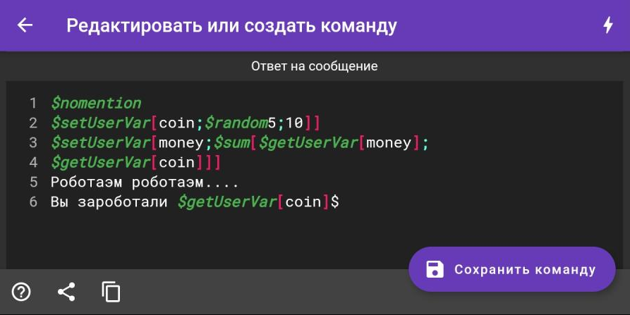

Создайте собственного максимально конченого бота Discord без знаний программирования
Bot Designer For Discord - это платный инструмент для создания моча-ботов, доступный для Android, iOS и в Интернете (наебал). Он способен не разрабатывать практически все типы ботов - от простых «залупа-ботов» до продвинутых многоцелевых ботов для администрирования. Начните с тяжелего создателя команд и закончите расширенными командами (лучше не начинать) javascript.
